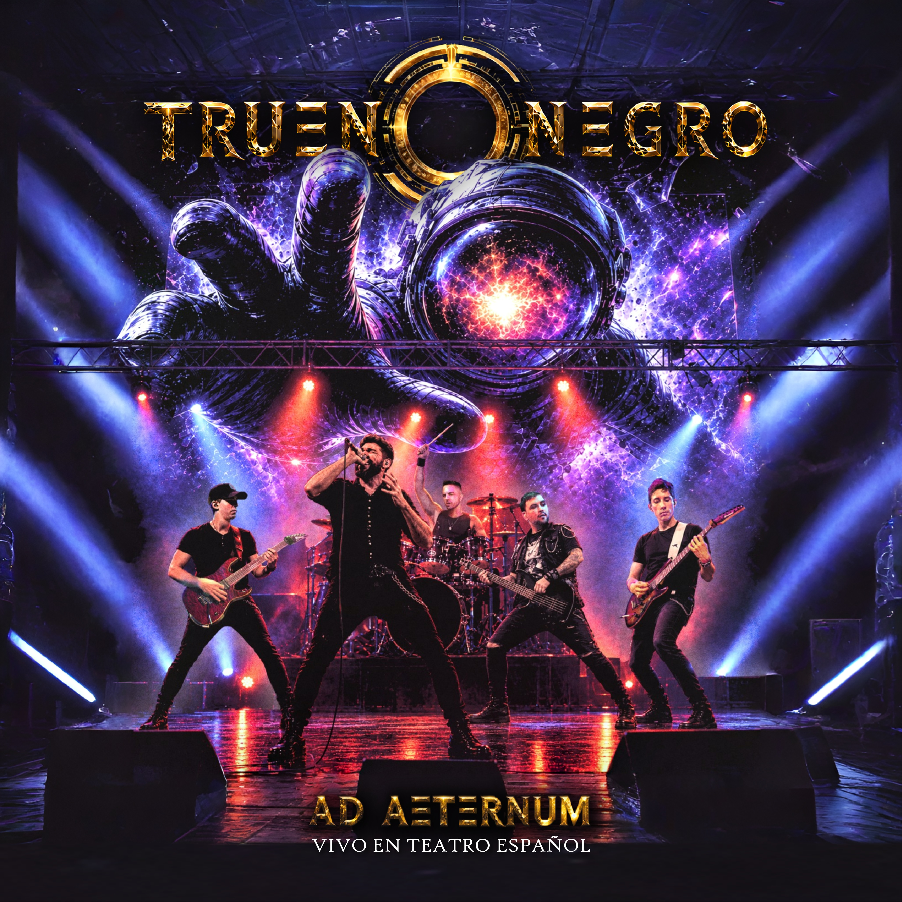
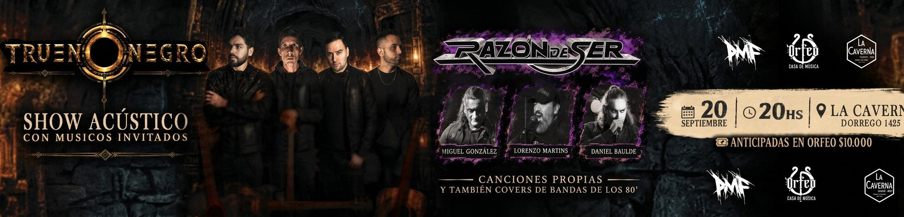

Bruno Baulde
Voz · Guitarra
POWER METAL · ARGENTINA

El próximo 3 de octubre llega AD AETERNUM: Vivo en Teatro Español, el nuevo disco en vivo de Trueno Negro.
Una noche que quedó registrada en vivo y que ahora se convierte en un nuevo capítulo en la historia de la banda.
El material fue registrado el 13 de septiembre de 2025 en el Teatro Español, dejando documentada aquella presentación y llevando al formato discográfico una selección del repertorio de la banda.
LISTA DE TEMAS
0. Intro
1. Furia del Trueno
2. Inmortalidad
3. Alma Ardiente
4. Mysteria
5. Tiranos
6. Destino
7. La Fuerza Infinita
8. Ciega Enfermedad
9. Rojo Amanecer
10. Arde
11. Neogenesis
12. Predestinado
13. Esclavos

Trueno Negro es una banda argentina de Power Metal nacida en Comodoro Rivadavia, Chubut.
Una propuesta que combina potencia, melodía y una identidad marcada por conceptos épicos, cósmicos y futuristas.
Formada en 2016 en Comodoro Rivadavia, Argentina, Trueno Negro es una banda de Power Metal y Heavy Metal fundada por el vocalista Bruno Baulde. Su música combina la potencia del metal clásico con una impronta propia, letras en español y una ejecución instrumental contundente.
A lo largo de su carrera, Trueno Negro ha compartido escenario con bandas nacionales de renombre como Lörihen, Tren Loco y Asspera, así como con artistas internacionales como Tim "Ripper" Owens y Einar Solberg. Entre sus hitos más destacados se encuentra su participación junto a Timo Tolkki, con quien no solo compartieron escenario, sino que también actuaron como su banda de gira en parte de su tour por Argentina.
Reconocidos por su fuerza en vivo y una propuesta sonora poderosa, Trueno Negro continúa consolidándose como una de las bandas emergentes más firmes del metal argentino.
Voz · Guitarra
Bajo
Batería
Guitarra
Productora y management de Trueno Negro.
Cinco lanzamientos que recorren la evolución de Trueno Negro desde 2017 hasta la actualidad.

El capítulo más reciente de Trueno Negro. Una nueva etapa marcada por la energía, la oscuridad y la transformación.
ESCUCHARPróximas presentaciones de Trueno Negro.

COMODORO RIVADAVIA · CHUBUT · ARGENTINA
TRUENO NEGRO · SHOW ACÚSTICO
El próximo 20 de septiembre, TRUENO NEGRO presenta un show acústico especial junto a músicos invitados. En esta ocasión, compartiremos escenario con RAZÓN DE SER, con la participación de Miguel González, Lorenzo Martins y Daniel Baulde. Una noche con canciones propias y también covers de bandas de los 80’, en un formato diferente y más íntimo.
También podés adquirir tu entrada mediante transferencia
al alias:
TRUENO.ACUSTICO
Una vez realizada la transferencia, podés enviarnos
el comprobante por mensaje directo.

Comodoro Rivadavia · Chubut · Argentina
TRUENO NEGRO · TELONEROS DE BLAZE BAYLEY
BLAZE BAYLEY retorna a Comodoro Rivadavia,
luego de 8 años con "StoryTellers", un show
acústico exclusivo, festejando el cumpleaños
de LA CAVERNA, en Dorrego 1425.
Ambientará la noche DJ Jere Casares y cerrarán
nuestros TRUENO NEGRO, con su set acústico.

Buenos Aires · Argentina
TRUENO NEGRO · TELONEROS DE BLAZE BAYLEY
Blaze Bayley vuelve a Argentina luego de 8 años,
en esta oportunidad para tocar un set dedicado
a su época en IRON MAIDEN, que incluye temas de
'The X Factor', 'Virtual XI' & 'Best of the Beast'.
Será una oportunidad única para revivir estos
clásicos en su voz original y una gran banda que
lo acompaña, compuesta por todos los miembros
de ABSOLVA.
Para abrir la noche, TRUENO NEGRO llegan desde
nuestra Patagonia.
Para contrataciones, prensa, shows y consultas, podés comunicarte con nosotros a través de nuestras redes y plataformas oficiales.